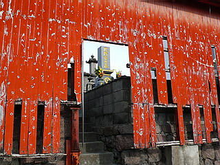
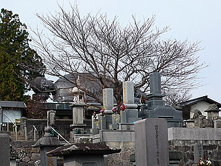
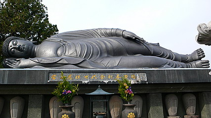
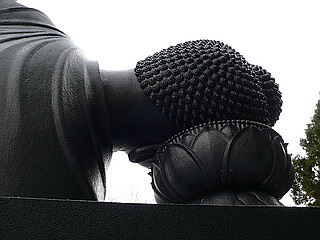
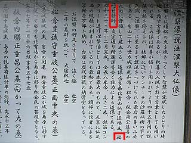
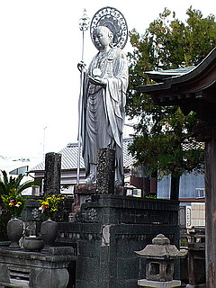
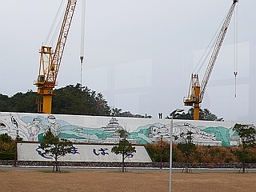

江東寺/長崎県島原市
島原の街中にある江東寺。江戸時代に出来た禅寺だ。
赤く塗られた壁と墓石に刻印された金文字が印象的だった。

九州、特に長崎県辺りで墓石といえば金文字。
何でなのかは知らないが、他の地域の人から見ると「派手過ぎない〜？」とも思える。
ちなみに長崎出身の私の知人は長崎を出るまで日本中お墓といえば金文字だと思っていたらしいです…
そんな墓地の一画におわす寝釈迦さん。

何だか立像をそのまま横倒しにしたような窮屈そうなポーズだ。
入滅の時までこんなこわばってないでしょ。
昭和32年に出来たこの寝釈迦さん、長さ8メートル余。自称日本最大の涅槃像だとか。

台座には坊塔が並んでいる。歴代住職の墓石であろう。
寝釈迦さんに近寄り激写していると、後からカメラをぶら下げたお婆ちゃんがやって来た。
何でも地元のアマチュアカメラマンだそうで（自称）。

寝釈迦さんはコンクリ製なれど後年にコーティングされたようでまるで鋳造製のようなマチエールだ。
自称カメラマンのお婆ちゃん、撮影はそっちのけで台座の裏側には扉があって納骨堂になっているんだ、とか奈良の仏師がどうのこうの、みたいな止め処ないマシンガントークが炸裂。思わず全身に被弾。
っと…ん？…奈良の？…
先ほど斜め読みってた説明書きを改めて見てみる

わぉぅ！福崎日精！
福崎日精氏の作であったとは！
福崎日精氏については佐賀の身代わり観音や新潟の弘願寺の大弘法を紹介させていただいた。
想像するに大仏界に隠然たる勢力を持っている人物である。
なんたる僥倖！あまり期待せずに見に来ただけに嬉しさ10倍！すっごく特した気分である。
お婆ちゃんにお礼を言いつつ寝釈迦さんを後にする。
境内の片隅には立派なお地蔵さんが。

後背や錫杖の細工の細かさ、身代わり観音でも見られた銀ペイントなどからして、もしかしたら福崎日精師の作では…などと勝手に想像してしまう。
帰りに島原港で見かけた看板。寝釈迦さんが島原城などと一緒に描かれている。

ここの寝釈迦さん、島原では超メジャーなんだ〜。
2007.12.
珍寺大道場 HOME